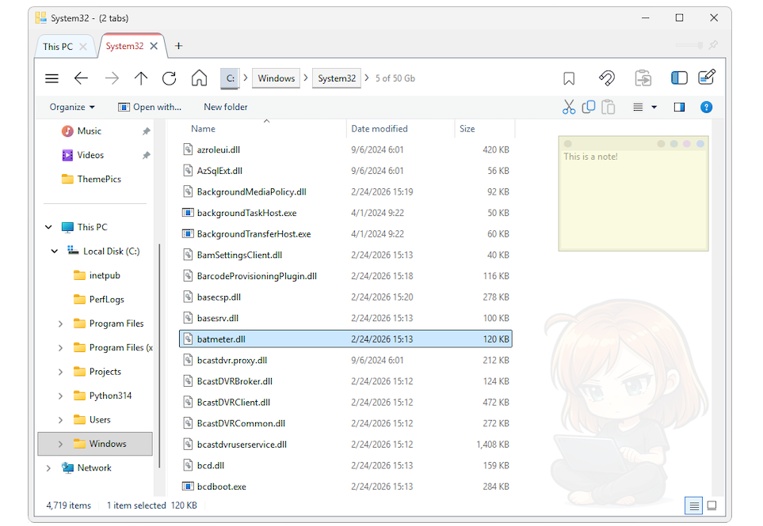

TabExplorer is a fast, lightweight and portable file explorer replacement for Windows. It builds on top of the native Windows Explorer for maximum compatibility, while adding convenient features such as tabs, path breadcrumbs, themes, background pictures and colors, favorites and dual-pane browsing.
All settings are stored in a folder of your choice, keeping your workspace up to date so that even after sudden crashes or reboots you can continue exactly where you left off.
TabExplorer is fully portable. Simply extract the 7z archive and run the executable — no installation required. All configuration and workspace data are stored locally within the application folder, making it easy to move or back up.

Requirements: Windows 10 or later with .NET Framework 4.8 (which is typically already included in the operating system) and just about 8 Mb of space in your disk.